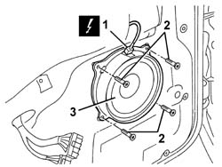

5570T90 front speaker - r r
- Path
- Procedures > 55 ELECTRICAL EQUIPMENT > 5570 ACCESSORIES > 5570T car radio and car telephone > 5570T90 front speaker - r r
- Kind
- repair procedure (removal / refitting; the operation number is the code)
- Applies to
- all engines; all production periods
- Interactive page
- https://sloeber94.github.io/elrnDB-a147/en/#/3025600
Applies to: all engines; all production periods
 Removing
Removing
 Refitting
RefittingWork with caution
7005C44 interior handle panel - r r
7005M12 passenger side front door electrically operated window switch - r r (for passenger door)
7040E24 lower courtesy light indoor panel - r+r
7005E08 front side door interior panel r r
1. Disconnect the electrical connections.
 | Name | Connector |
|---|---|---|
1 | Speaker in driver's .front door |
| Name | Connector |
|---|---|---|
1 | Speaker in front passenger door |
2. Unscrew the bolts
3. Recover the speaker.

Applies to: all engines; all production periods
Refitting
RemovingCheck that the speaker is not damaged.
Position the speaker.
Tighten the screws.
Connect the electrical connection
Check the operation of the speaker.
7005E08 front side door interior panel r r
7040E24 lower courtesy light indoor panel - r+r
7005M12 passenger side front door electrically operated window switch - r r (for passenger door)
Topics linked from this page (6)
- 7005C44 interior handle panel - r r
- 7005E08 front side door interior panel r r
- 7005M12 passenger side front door electrically operated window switch - r r
- 7040E24 lower courtesy light indoor panel - r+r
- P35 Speaker in driver's .front door
- P36 Speaker in front passenger door
Topics that link to this page (24)
- N11 RADIO CANNOT BE HEARD, IS HARD TO HEAR
- 5505B11 front door wiring - r r
- 7005A04 front side door water guard protection - r r or replace with door panel removed
- 7005A05 front side door water guard protection r r or arrange
- 7005A28 front side door limiter- repair or replace
- 7005C10 front door outer handle - r r with door panel removed
- 7005C11 front side door outside handle r r
- 7005C15 front side door lock barrel (in handle) - r+r
- 7005C42 front side door barrel/lock connecting linkage - r r with door panel removed
- 7005C43 link connecting front side door barrels/catch - r+r
- 7005C54 front side door internal opening return mechanism (with handle) - r r for repair or replace with different version
- 7005C55 front side door interior opening return device (with handle) - r+r for repair or replacement
- 7005D14 front side door descending window glass - r r with door panel (and mount frame) removed
- 7005D15 front side door descending window glass r r
- 7005D16 fixed window glass element - r r
- 7005D21 front door window front guide - r r
- 7005D24 front door window rear guide - r r
- 7005D25 front door window rear guide - r r
- 7005E91 One front door ANTI-BREAK IN PARTITION, left or right - R.R. with door panel removed
- 7005M20 front side door electric window system - r r with door panel/support frame removed
- 7005M21 front side door electrically operated window - r r
- 7005N20 front side door lock motor/catch assembly - rr with door panel and support frame removed
- 7005N21 front side door lock motor-lock assembley-r r
- 7205E36 Stripping FRONT SIDE DOOR